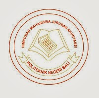

|

Jurusan Akuntansi
DIPLOMA III AKUNTANSI
VISI :
Menjadi program studi penghasil sumber daya manusia profesional berdaya saing internasional di bidang akuntansi, yang memiliki ilmu pengetahuan, teknologi, serta keterampilan sesuai dengan tuntutan industri saat ini dan masa depan.
MISI :
- Menyelenggarakan pendidikan Diploma III Akuntansi berdasarkan kurikulum berbasis kompetensi yang dilandasi dengan iman dan takwa kepada Tuhan Yang Maha Esa.
- Menyelenggarakan penelitian terapan di bidang akuntansi dan keuangan sesuai tuntutan ilmu pengetahuan dan teknologi
- Menyelenggarakan pengabdian kepada masyarakat di bidang akuntansi dan keuangan sesuai tuntutan ilmu pengetahuan dan teknologi.
- Menyelenggarakan pelatihan di bidang akuntansi, keuangan,dan manajemen sesuai dengan tuntutan industri dan instansi lain.
TUJUAN :
- Menghasilkan sumber daya manusia berdaya saing internasional yang berkompetensi di bidang akuntansi, pajak, perancangan sistem akuntansi, dan auditing.
- Menghasilkan penelitian terapan untuk menambah kompetensi dosen dan mahasiswa pada bidang akuntansi keuangan, pajak, sistem, dan auditing.
- Menambah kompetensi masyarakat, industri dan instansi lain pada bidang akuntansi, keuangan, pajak, sistem, dan auditing melalui pengabdian masyarakat.
- Meningkatkan kompetensi masyarakat industri di bidang akuntansi, keuangan, dan manajemen melalui penyelenggaraan pelatihan.
DIPLOMA IV (SARJANA SAINS TERAPAN) AKUNTANSI MANAJERIAL
VISI :
Menjadi Program Studi penghasil sumber daya manusia profesional berdaya saing Internasional di bidang Akuntansi Manajerial, yang memiliki ilmu pengetahuan, teknologi serta keterampilan sesuai dengan tuntutan dunia industri, berdasarkan atas disiplin dan takwa kepada Tuhan Yang Maha Esa.
MISI :
- Menyelenggarakan Program Pendidikan Akuntansi Manajerial Jenjang Diploma (D IV) yang menerapkan kurikulum berbasis kompetensi di tunjang oleh penguasaan ilmu pengetahuan dan teknologi.
- Menyelenggarakan pelatihan di bidang akuntansi manajerial untuk masyarakat, industri, dan instansi lain sesuai dengantuntutan ilmu pengetahuan dan teknologi.
- Menyelenggarakan penelitian terapan di bidang akuntansi manajerial sesuai dengan tuntutan ilmu pengetahuan dan teknologi.
- Menyelenggarakan pengabdian kepada masyarakat dibidang akuntansi manajerial sesuai dengan tuntutan ilmu pengetahuan dan teknologi.
TUJUAN :
- Menghasilkan (Lulusan) Sumber Daya Manusia sarjana sain terapan yang mempunyai kemampuan di bidang Akuntansi Manajerial.
- Meningkatkan kompetensi dunia industri melalui pelatihan di bidang Akuntansi Manajerial, Audit Keuangan, Audit Manajemen, Sistem Informasi, Perpajakan, Pengelolaan Risiko, Pasar Modal dan Investasi.
- Menghasilkan penelitian terapan di bidang Akuntansi Manajerial, Audit Keuangan, Audit Manajemen, Sistem Informasi, Perpajakan, Pasar Modal dan Investasi, untuk menambah kompetensi dosen dan mahasiswa.
- Meningkatkan kompetensi masyarakat di bidang Akuntansi Manajerial Audit Keuangan, Audit Manajemen, Perpajakan, Pengelolaan Risiko, Pasar Modal dan Investasi, sesuai dengan tuntutan ilmu pengetahuan dan teknologi melalui pengabdian masyarakat.
Program Studi D3 Akuntansi :
Menyiapkan lulusannya menjadi akunting yang profesional. Untuk itu, program studi ini menerapkan mata kuliah unggulan sesuai dengan kebutuhan industri, seperti : akuntansi keuangan, akuntansi biaya, sistem akuntansi, akuntansi manajemen, auditing, perpajakan, penganggaran, bahasa inggris, komputer akuntansi, dan manajemen, sehingga mampu membuat anggaran perusahaan, menghitung biaya produksi dan harga pokok penjualan, membuat laporan keuangan, dan sebagai asisten auditor di instansi pemerintah maupun swasta.
Program Studi D4 (S1 Terapan) Akuntansi Manajerial :
Menyiapkan lulusanna menjadi akunting yang profesional dengan kompetensi mampu membuat anggaran perusahaan, menghitung biaya produksi dan harga pokok penjualan, membuat laporan keuangan, sebagai asisten auditor, menghitung/menyetor dan melaporkan pajak (mengisi SPT), mengoperasikan program komputer akuntansi, serta mampu membuat perencanaan, pengendalian, dan pengambilan keputusan yang bersifat strategis dengan menggunakan data-data akuntansi/keuangan.
|
Pengumuman
|
|
Berita Terbaru
|
|
|